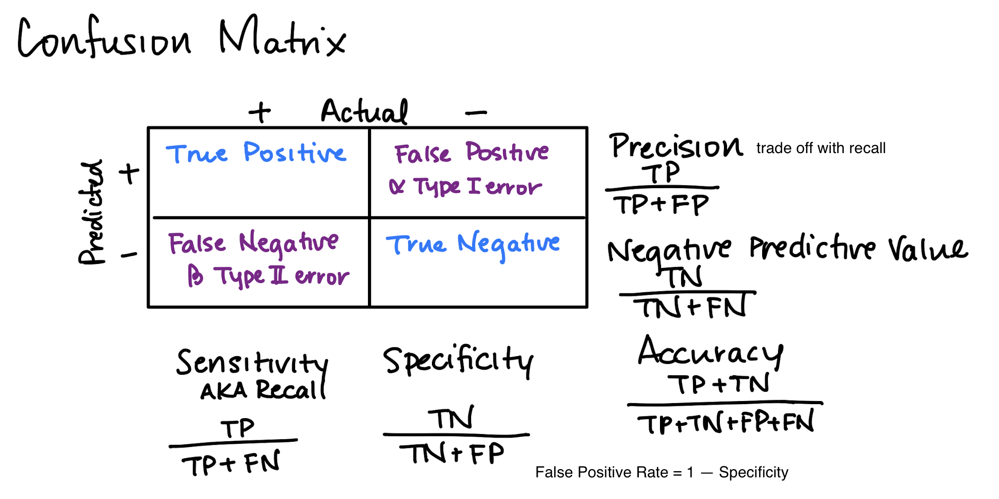
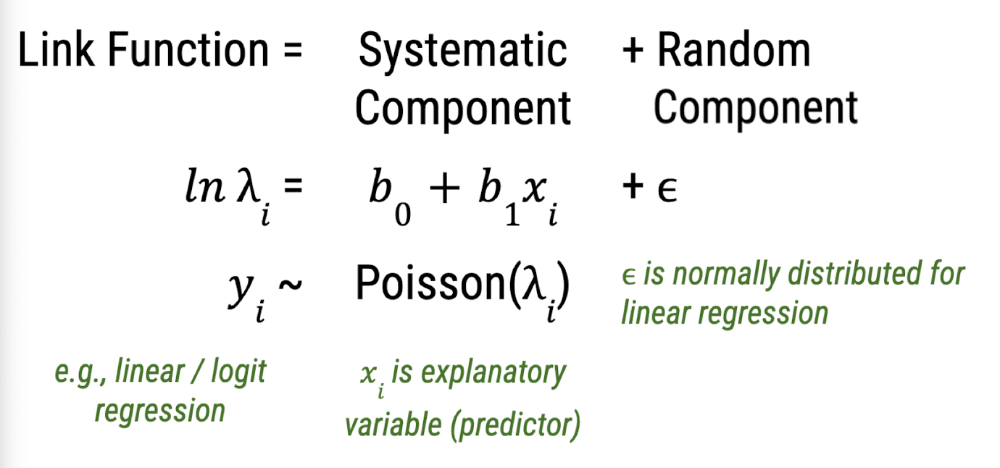
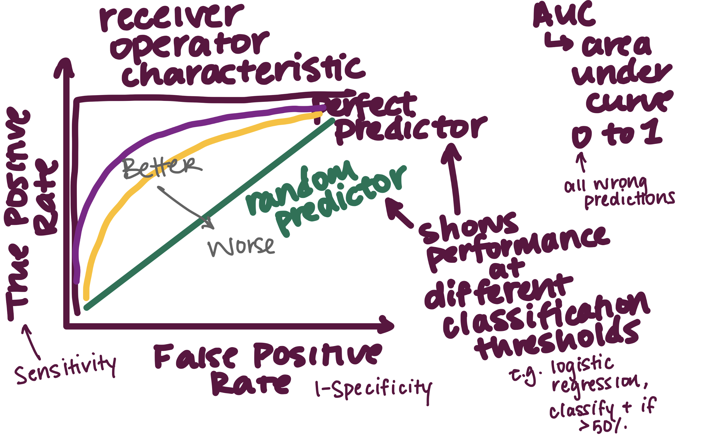

A classification model evaluation metric. \( \text{Accuracy} = \frac{\text{number of correct predictions}}{\text{total number of predictions}} \)
(not good for imbalanced datasets)
Adaptive boosting is an ensemble method that sequentially combines decision trees with a single split and sets weights uniformly for all data points.
The data points are reweighted at each iteration depending on whether it was correctly classfied or not. The weighted predictions of each classifier are combined at the end to obtain a final prediction.
Bias is how close the model's predictions are to actual data. A high bias model oversimplifies the
data and therefore underfits the data.
Variance is the model's sensitivity to fluctuations - how much prediction error changes based on
training inputs. High variance models overfit the data; they tend to perform well on training set
but not on validation or test sets. To counter overfitting (reduce variance:
• feature selection
• regulatization
• dimensionality reduction
• subset selection (best subset selection, stepwise selection)
When modeling, the tradeoff between high bias/low variance and high variance/low bias needs to be
balanced.
Short for Bootstrap Aggregating, bagging is a machine learning ensemble technique designed to
improve the stability and accuracy of machine learning algorithms.
Multiple models (often called "weak learners") are trained and combined to produce a stronger
overall model.
Multiple subsets of the original training data are created using bootstrap sampling (randomly
sampling with replacement).
A separate model is trained on each of these bootstrapped subsets. Since each subset is different,
each model will have slight variations.
Once all the models are trained, their predictions are combined. For regression tasks, this is
usually done by averaging the predictions. For classification tasks, it is often done by majority
voting.
Boosting is An ensemble learning technique that combines the predictions of multiple weak learners
(models that are slightly better than random guessing) to produce a strong learner with better
performance.
Boosting trains weak learners sequentially where each subsequent learner focuses on
addressing the mistakes of the previous model.
Generative Models
Discriminative Models
Joint Distribution of \(X\) and \(Y\) \(P(X,Y) = P(Y|X)P(X) \)
\( \hat{y} = argmax_k P(Y = k|x) \)
Determine decision boundary between classes by maximizing the posterior probability distribution.
An unsupervised machine learning approach to group comparable data points by certain traits.
K-means Clustering
• Partitions data into k clusters and then arbitrarily selects centroids of those clusters
• Updates the groups by assigning points to closest cluster, updating the centroids, and then repeat
until convergence
Hierarchical Clustering
• Assigns data points to clusters and adds nearest points until there's one cluster left
• Dendogram - more interpretable
Density Clustering (DBSCAN)
• Groups points together that have high density - have many neighbors
• Good at detecting outliers
R2 measures how well the independent variables explain the variability in the dependent
variable.
If R2=1, the model perfectly predicts the dependent variable.
If R2=0, the model does not explain any variability in the dependent variable.
R2 = SSR (explained variance) / SST (total variance)

Estimates the influence of any given data point. Considers residual and leverage (how far the point
difference from other X values). A method to identify outliers; remove points beyond a certain
threshold
Cross validation is a method of splitting the data into training and test subsets to avoid testing
and training on the same data. Doing so may cause overfitting which decrease the model's
performance.
k-fold cross validation
1. Randomly divide the data into folds of equal size
2. Train the model on all folds except for one, which is the validation set on which the model is
evaluated.
For each training run, change the validation fold.
3. Average the k validation errors to get an estimate of the true error.
leave one out corss validation (LOOCV)
A special case of k-fold cross validation where k equals the size of the dataset (n). The model tests every single data point during cross validation. Computationally expensive.
A supervised machine learning model that can be
used for classification or regression problems. The algorithm is trained in a greedy and recursive
fashion starting at a root node and making binary splits in features that lead to minimal error.
Quantifies uncertainty in a random variable assuming \(k\) states
Entropy \(H(Y) = \sum_{i=1}^k P(Y = k) log(PY=k)\)
Higher entropy means closer to uniform distribution than a skewed one.
Example: Gini index
A classification model evaluation metric, good for
imbalanced datasets>
\[ F_1 = 2 \times \frac{\text{precision} \times \text{recall}}{\text{precision} + \text{recall}} \]
Optimize for the F1 score to balance precision vs. recall.
Linear regression that allows residuals to not be normally distributed

In a decision tree, maximize IG recursively on all branches
For some feature \(X\) on which we want to split, \( IG(X,Y) = H(Y) - H(Y|X)\)
\(IG(X,Y)\) is the reduction in uncertainty in \(Y\) by splitting on \(X\)
\(H(Y)\) is the entropy from initial training labels
Local Interpretable Model-Agnostic Explanation
Uses sparse linear models built around various predictions to understand how any model performs in
that local vicinity.
A supervised machine learning algorithm for binary classification.
It predicts the likelihood of a binary outcome based on input variables using a logistic (sigmoid) function to map linear outputs to probabilities.
Sigmoid \( S(x) = \frac{1}{1+e^{-x \beta}} \)
where \(x\) are predictor variables
and \(\beta\) is a vector of weights
\(P (\hat{Y} = 1|X) = S(X \beta) \)
Pros:
• high explainability
• quick to compute
Cons:
• high bias, low variance (prone to underfit, assumes linear boundary layer)
• weights, \(\beta \) terms, are not accurate if input variables are correlated
Evaluation metric for regression that measures the average
absolute difference between the actual and predicted values. Lower MAE means better model
performance.
\[ MAE = \frac{1}{n} \sum_{i=1}^{n} \mid y_i - \hat{y}_i \mid \]
Evaluation metric for regression that measures the average of the squared differences between
actual and predicted values. Lower MSE means better model performance. The MSE represents
unexplained
variance, the portion of variability in the dependent variable that is not explained by the
model's independent variables.
\[ MSE = \frac{1}{n} \sum_{i=1}^{n} (y_i - \hat{y}_i)^2 \]
When predictors are highly correlated with each other so it's hard to distinguish the true
underlying weights.
Multicollinearity can be assessed with the Variance Inflation Factor (VIF). It quantifies how much
the estimated coefficients are inflated when multicollinearity exists. A VIF of 1 means there is no
correlated. >1 means there is correlation. 5-10 means there is high multicollinearity.
Multicollinearity can be removed by:
• removing correlated variables
• linearly combine variables
• PCA (dimensionality reduction)
• PLS (partial least squares)
• regularization methods (ridge or lasso)
A supervised machine learning algorithm used for classification problems that applies Bayes' Theorem with a naive assumption of independence between features.
In other words, it decouples the class conditional feature distributions by assuming that the presence of a particular feature in a class is independent of all other features. Each feature's distribution can be independently estimated as a 1-D distribution \( P(X_1...X_n|Y)=\prod_{i=1}^n P(X_i|Y) \). Apply the conditional independence assumption and Bayes' Theorem gives the classification rule \( \hat{y}=argmax_{y_i} P(Y=y_i)\prod^j P(X_j|Y=y_i)\).
For any machine learning model with k features, there are 2\(^k\) possible feature interactions. You would need that many data points for a good model. However, the conditional independence assumption of Naive Bayes requires only k data points.
A classification model evaluation metric. \( \text{Precision} = \frac{\text{# true
positives}}{\text{(# true positives + # false positives)}} \)
tradeoff with Recall
Random forest is an ensemble bagging method that averages decision trees. A random subset of
features is considered for each split. Its advantages are that it helps overcome decision trees'
proneness to overfitting, has quicker training time, and more interpretable.
A technique for quantifying the relationship
between independent variables (features or predictors) and a dependent variable (target or outcome)
to make predictions and illuminate the influence of the independent variables on the target.
Multiple Regression: Two or more independent variables to predict one dependent variable
Linear Regression: The relationship between the independent and dependent
variables are fitted with a linear equation Polynominal Regression: The relationship between the independent and
dependent variables are fitted with a polynomial equation such as quadratic or cubic Ridge and Lasso Regression: Regularization technique to handle collinearity (high
correlation
among features) to prevent overfitting. It introduces additional information to penalize extreme
parameter (weight) values
Unexplained variance from a model. For example, in a linear
regression, parameter \(\beta\) is found by minimizing RSS. Also known as Sum of Square Errors
(SSE).
\(RSS(\beta) = (y - X\beta)^T(y-X\beta) \)
The receiver operating characteristic (ROC) curve shows a classification model's performance across
all classification thresholds. The area under the curve (AUC) is the area under the ROC. An AUC of 1
means the model performed perfectly. An AUC of 0.5 means that the model performed as well as random
guessing.

The square root of MSE. This metric helps with:
Interpretability: Because RMSE is expressed in the same unit as the dependent variable,
it is easier
to interpret and more relatable to the original scale of the data.
Outlier Sensitivity: RMSE is more sensitive to outliers than MSE, as larger errors
contribute more
significantly due to the squared and square root operations.
Direct Comparison: RMSE offers a direct comparison to the standard deviation of the
target.
If the
RMSE is close to the standard deviation (the inherent variability in the original data), then it
indicates that the model's predictions are capturing a similar level of variability on average
as
the observed data.
Balanced Assessment: By taking the square root, RMSE balances the impact of extreme
errors,
offering
a more well-rounded evaluation of prediction accuracy in regression models.
A classification model evaluation metric also known
as recall or the true positive rate. \( \text{Sensitivity} = \frac{\text{# true
positives}}{\text{(# true positives + # false negatives)}} \)
A classification model evaluation metric. \(
\text{Specificity} = \frac{\text{# false positives}}{\text{(# false positives + # true negatives)}}
\)
The sum of the squared differences between each
observation
and the mean of the dependent variable \( \hat{y} \).
Stepwise Selection
• Forward: Start with an empty model and add the most useful predictors iteratively
• Backward: Start with a full model and remove least useful predictors iteratively
A max-margin supervised classification model that forms a hyperplane that linearly separates the
training data. The margin between the decision boundary (hyperplane) to any training point (usually
the support vectors) is maximized. The margin can be linear or nonlinear.
SVM works well:
• for high dimensional spaces
• when there is a clear hyperplane
• for nonlinear decision boundary
SVM does not work well:
• on large datasets (high computational complexity)
• when target classes overlap (no clear decision boundaries)
• SVM is also hard to interpret/explain and is sensitive to outliers